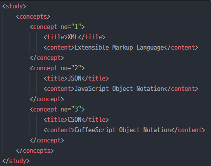

XML(Extensible Markup Language)
W3C에서 개발된 다목적 마크업 언어(태그 등을 이용하여 문서나 데이터의 구조를 명기하는 언어의 한 가지, 일반적으로 데이터를 기술하는 정도로만 사용된다)이다.
XML은 주로 다른 종류의 시스템, 특히 인터넷에 연결된 시스템끼리 데이터를 쉽게 주고 받을 수 있게 하여 HTML의 한계를 극복할 목적으로 만들어졌다.

이런식으로 HTML과 굉장히 비슷한 형태를 띄고 있다. (사실 위의 그림이 제대로 된 XML인지 모르겠다. XML과 HTML의 차이에 대해서도 추후에 알아볼 예정이다.)